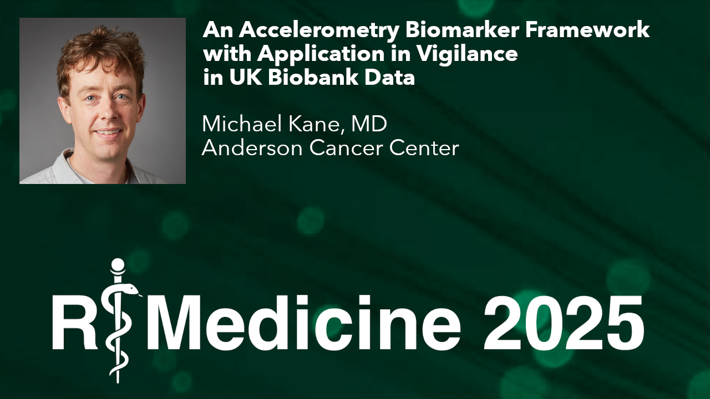
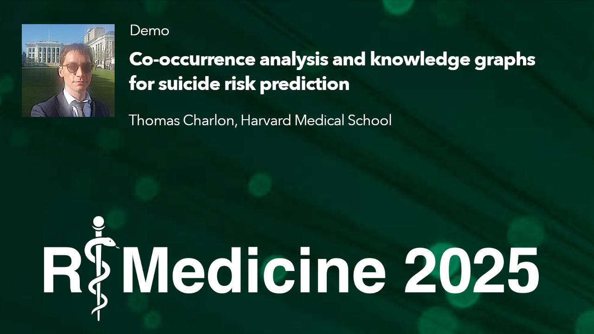
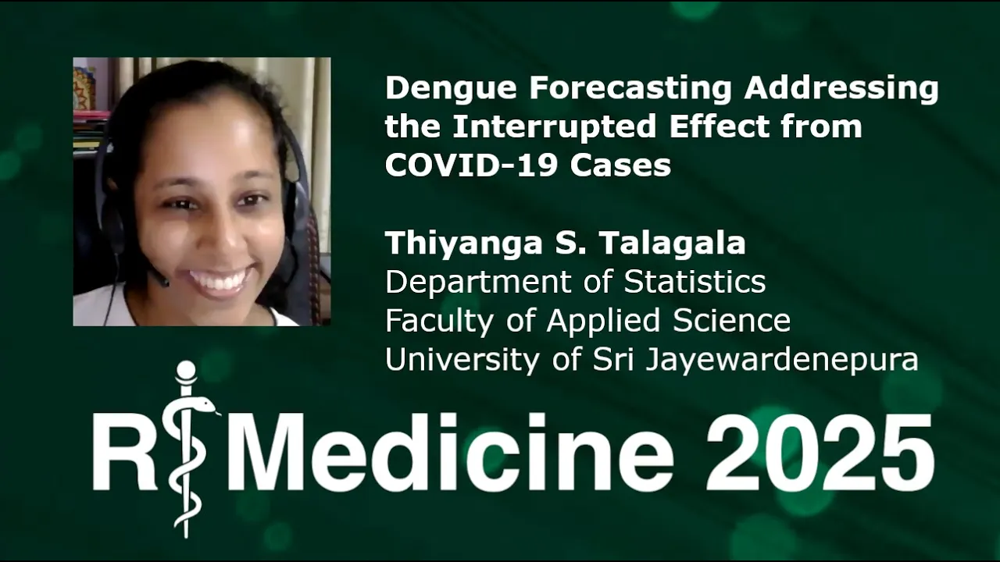
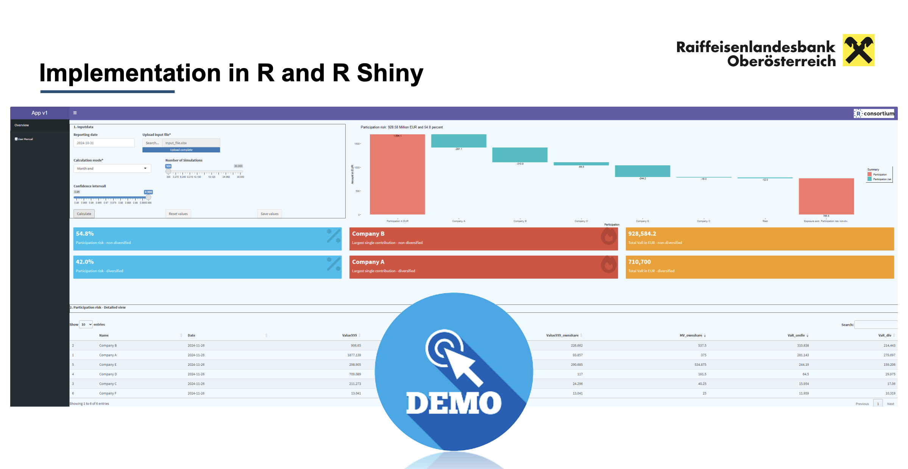

Want to contribute to the R Consortium blog? Please review our Blog Post Guidelines.
R Consortium blog archive (2015-2024)
Remove bad patterns in your R code in the blink of an eye.
Discover mini007, a new R package for orchestrating multi-agent frameworks in LLM workflows.
mini007
Elevate your R projects with {brandthis}: Effortlessly craft branded documents using large language models.
{brandthis}
Exploring the relevance of Gradient Boosting Machines in the AI and LLM era. Are GBMs still the best?
Explore Joe Chang’s insights on responsibly harnessing LLMs in data science and research.
How Jasmine Daly uses AI-assisted development to scale an R-based data science consultancy, deepen R intuition, and say yes to bigger, more meaningful projects.
Insights into building GenAI applications using R and Python, focusing on model interfaces, context handling, and result validation.
At R+AI 2025, Oracle Machine Learning’s Mark Hornick and Sherry LaMonica showed how R users can apply Retrieval Augmented Generation (RAG) to R Consortium blog data using…
R-Ladies Buenos Aires and R en Buenos Aires organized a community-based reading club to learn Mastering Shiny together, creating a supportive environment for learning and…
R Foundation embarking on a crucial project to modernize R’s core infrastructure, improve its maintainability, and fortify its supply chain.
Oracle releases Oracle R Distribution 4.4.1 with up to 2.5× faster performance via Intel MKL optimizations, available across supported platforms.
The R Consortium Infrastructure Steering Committee (ISC) has opened the second grant cycle of 2025. Learn how to apply for funding to support your R community infrastructure…
Vicent Boned and Marc Eixarch, organizers of the R User Group Finland, spoke with the R Consortium about how they revived the local R community by focusing on fun, practical…
Ekaterina Akimova-Höpner, founder of the R-Ladies Salzburg chapter, recently spoke with the R Consortium about using R to support cutting-edge cancer research and building a…
cpp11armadillo connects R with the Armadillo C++ linear algebra library through the modern cpp11 interface, providing developers with safer, more flexible tools for…
How do you sustain an active R community in a region without a central tech hub?
Join the Health Technology Assessment (HTA) working group in building a strategy for standardization or automation for the HTA process.
Join us at R+AI 2025, Nov 12-13, 2025, our inaugural conference dedicated to the open-source R community and every facet of artificial intelligence.
The Brazilian Association of Investigative Journalism (Abraji)’s annual international congress will take place on July 10th-13th, 2025, in São Paulo, Brazil. - UPDATED with…
How developing an analytics community at the Virginia Department of Environmental Quality has led to technological integrations and process improvements.
Enhance your R plots with parameterization to create reusable and interactive visualizations.
Simplify patient cohort management in R with CohortConstructor, using OMOP Common Data Model for healthcare data.
Explore how Nix and {rix} transform Shiny app development with seamless reproducibility.
REDCapSync & RosyREDCap streamline clinical data analysis with R, enhancing research insights & efficiency.
Explore how the targets package in R enhances reproducibility in data science workflows.
targets
Discover SQL’s power in R for clinical data analysis with Chris Battiston’s beginner-friendly workshop.
Discover the power of Quarto Dashboards for data visualization with Professor Çetinkaya-Rundel’s guide!
Insights from R/Medicine 2025 panel on supporting R learners.
Learn to create accessible, clear charts in R with colorblind and autism-friendly palettes, enhancing inclusivity.
Discover distanceHD, a new R package for high-dimensional clustering with innovative distance metrics.
distanceHD

This R/Medicine 2025 talk looks into using accelerometry as a biomarker for assessing vigilance.
Explore how attention mechanisms improve regulatory submissions in R/Medicine, enhancing efficiency and accuracy.
Explore how AI is revolutionizing medical discovery, from knee pain to sudden cardiac death, as discussed by Dr. Ziad Obermeyer at R/Medicine 2025.
Learn how to simplify your use of bootstrap methods in R with the boot.pval package for more reliable statistical inference.

Explore how R packages nlpembeds and kgraph revolutionize mental health diagnostics with NLP.
nlpembeds
kgraph

Addressing COVID-19’s impact on Dengue forecasting using adaptive statistical models in Sri Lanka.
Explore how coding choices in R impact healthcare equity, focusing on ethical implications in regression analysis.
The crux of reproducibility lies in the precise and consistent implementation of the original work.
Discover rUM 2.2, a game-changer for biomedical research reproducibility, developed at the University of Miami.
R/Medicine 2025 Keynote Day 2: Dr. Erin LeDell explores the evolution of AI evaluation from deterministic models to complex generative AI systems.
Automating patient inquiry tracking in pharma with R Shiny: A game-changer in specialty pharma coordination.
Discover nonprobsvy, an R package for non-probability sample inference, enhancing survey analysis.
nonprobsvy
Day 2 Opening Remarks for R/Medicine 2025: Emily Zabor covers R’s role in medical innovation and research.
Discover how Buenos Aires leverages R to optimize healthcare cost recovery, enhancing efficiency & sustainability.
Kimberly Lactaoen tackles EHR data challenges in asthma research using R’s tidyverse suite.
Discover rainbowR, a supportive community for LGBTQ+ R coders promoting inclusivity and activism.
Explore the balance between refactoring and preserving in Shiny app lifecycle with Dror Berel’s insights.
Explore Jeremy Selva’s approach to clinical data harmonization using R and Quarto, enhancing transparency and efficiency in reporting.
Exploring riskcalc.org, a platform for clinical risk calculators using R, Shiny, and open-source tools.
Boost R reproducibility with Nix and {rix}! Explore tools for consistent data science environments.
Closing remarks from Michael Kane at R/Medicine 2025: community, innovation, and future directions.
R/Medicine 2025 is officially underway! Opening remarks on Day One by Emily Zabor, R/Medicine 2025 chair.
Highlights and insights from Day 1 of R/Medicine 2025 with Peter Higgins’ closing remarks.
Discover how the {cards} R package revolutionizes statistical analysis with the ARD Model for reproducibility.
ggswim is an R package developed to ease the creation of swimmer plots.
teal
Explore teal in R for interactive clinical data analysis with Dony Unardi. Learn to build and extend Teal apps.
Discover a deep learning framework for ICU patient care, enhancing predictions for post-discharge outcomes.
Find out how CAMIS is fostering collaboration, transparency, and reliability in the field of statistical analysis.
Explore practical strategies for validating Shiny apps in regulated environments without stifling innovation.
Explore how React.js can extend Shiny’s capabilities for building advanced, interactive applications!
Discover {redquack}, a package for memory-efficient REDCap data workflows with DuckDB.
Discover AOUSDOHtools, an R package simplifying Social Determinants of Health data analysis.
Examining factors linked to depressive symptoms in cancer survivors using NHIS data
Discover the kidney.epi R package for advancing chronic kidney disease research and analysis.
kidney.epi
Explore the MIIPW R package for tackling missing data in longitudinal studies using advanced statistical methods.
Winners of the Data Competition in the Professional category Harrison Plate & Shonushka Sawant analyze US measles vaccination trends at R/Medicine 2025.
Explore Iko Musa’s student competition-winning analysis on US measles immunity gaps using R tools at R/Medicine 2025!
This workshop is designed to bridge the gap between healthcare and data science by providing a comprehensive introduction to R and its application in clinical research.
Learn how to streamline your R workflow, manage packages efficiently, and secure your projects with insights from the R/Medicine 2025 workshop.
Automating CAD pretest probability calculations with the pretestcad R package for improved patient care.
Introducing RHealth: Bridging R and AI for healthcare predictive modeling with deep learning
Accessing LLMs programmatically opens up a whole new world of possibilities, letting you integrate LLMs into your own apps, scripts, and workflows.
Discover Rainbow R: A community connecting LGBTQ+ R coders through activism and support!
Learn how pkgdown combined with GitHub Pages simplifies creating and maintaining R package documentation websites.
“We’ve officially launched a fundraising campaign for the Regulatory R Repository — a critical initiative built to support the safe, efficient, and confident use of R…
The R User Group at the University of Manchester (RUM) is bringing together a diverse community of students, researchers, and staff dedicated to advancing their skills in R…
Topological data analysis (TDA) is increasingly integrated into machine learning. This project introduces two R packages—TDAvec and tdarec—to bridge TDA with the Tidymodels…
The R Consortium’s Infrastructure Steering Committee (ISC) is proud to announce the first round of 2025 grant recipients. These seven projects are receiving support to…
{kuzco}
Interview with Frank Hull, data scientist, open source contributor, and developer of {kuzco}

Goran Lovric and Simon Aigner, from Raiffeisenlandesbank Oberösterreich (Raiffeisen State Bank of Upper Austria), demonstrate innovative uses of R for modeling participation…
{rix}
How can we ensure long-term reproducibility across operating systems, platforms, and time? Bruno Rodrigues believes the answer lies in Nix—and a package he developed for the…
Iko Musa, founder of the Unijos R Users Group at the University of Jos (UNIJOS), Nigeria, spoke with the R Consortium about how the group built an inclusive and…
Kamil Sijko, organizer of both the R Users and R-Ladies Warsaw groups, recently spoke with the R Consortium about the evolving R community in Poland and the group’s efforts…
Joe Brillantes, organizer of the R User Group Philippines, shares how the group has evolved with new interests emerging among its members.
Executive Director Terry Christiani highlights upcoming events like R/Medicine 2025 and useR! 2025, opportunities for non-members to join Working Groups, and tons more!
Ozan Evkaya, one of the local organizers of the Edinburgh R User group, recently spoke with the R Consortium about his journey in the R community and his efforts to…
Donald Szlosek, the MaineR Users Group organizer, recently spoke with the R Consortium about the group’s transition from a city-based meetup to a statewide community and its…
Lito P. Cruz, organizer of the Melbourne Users of R Network (MELBURN), spokes about the group’s efforts to engage data professionals across government, academia, and…
geometa provides an essential object-oriented data model in R, enabling users to efficiently manage geographic metadata. The package facilitates handling of ISO and OGC…
This year, useR! 2025 will be held at Duke University in Durham, North Carolina, on August 8-10, 2025. Registration is now open!
As we open our first round for Infrastructure Steering Committee call for proposals and R User Groups’ submissions, we want to take a moment to reiterate our mission as the…
Dr. M.K. Garba and Ezekiel Ogundepo, organizers of the University of Ilorin, shortened to Unilorin R User Group, recently spoke with the R Consortium about their efforts to…
The R Consortium Submission Working Group is excited to announce a new Pilot 5 that aims to deliver an R-based Submission to the FDA using Dataset-JSON. This post also…
Alberto Torrejon Valenzuela, organizer of the Seville R Users Group, recently spoke with the R Consortium about the dynamic growth of the R community in Seville and the…
Jeffrey Stevens, organizer of the Nebraska R User Group, recently spoke with the R Consortium about his efforts to establish a vibrant R community across Nebraska.
Dr. Nathakhun Wiroonsri and the RxTH User Group are aiming to make R more accessible and appealing across industries, especially among the younger generation.
I believe it is essential to reengage in activities to invite new generations to participate, explore new tools and opportunities, and collaborate in a space that welcomes…
Marina Cock, co-organizer of R-Ladies Santa Rosa, recently spoke with the R Consortium about the growth of the R community in La Pampa and the transformative role of R in…
Details on Roche’s NEST and admiral teams’ open source R packages and their partnership building reusable functions and utilities, testing documentation, and more.
The CRAN Cookbook is creating a user-friendly, technical cookbook-style guide to help new R programmers and package maintainers navigate the CRAN submission process
David Mwale, the R Users Malawi group organizer, recently spoke with the R Consortium about his efforts to establish and grow the R community in Malawi.
Betsabe Cohen, organizer of R-Ladies Buenos Aires, recently spoke with the R Consortium about the growth and diversity of the R community in Argentina and its role in…
Beatriz Milz, a co-organizer of R-Ladies São Paulo, recently spoke with the R Consortium about the vibrant growth of the R community in São Paulo and its commitment to…
How R has impacted students and teachers at an inner city girls’ school in the UK
R-universe is a platform for improving publication and discovery of research software in R, developed by rOpenSci.
Driselda Sánchez-Aguirre, co-founder and organizer of R-Ladies Querétaro, recently spoke with the R Consortium about her journey in building a welcoming, diverse R community…
In a recent interview with the R Consortium, Andreas Neudecker, solution architect at INWT, a data and analytics company located in Berlin, Germany, shared insights into the…
On October 31, 2024, the Health Technology Assessment (HTA) Working Group convened for its first general meeting, marking the beginning of an exciting industry-wide…
Neil Shephard, co-organizer of the Sheffield R User Group in Sheffield, United Kingdom (also on fosstodon), recently spoke to the R Consortium about his journey from Genetic…
The R package api2r simplifies the process of wrapping APIs in R. The R Consortium interviewed Jon Harmon, Principal Data Solutions Engineer at Atorus, about this R…
Frans van Dunné, the organizer of the San Carlos R User Group, recently discussed with the R Consortium the development of the R community in Costa Rica and the broader…
Goretty Mendoza, the organizer of the R-Ladies Morelia, recently spoke to the R Consortium about her experience with the group and her work using R in molecular biology.
The Dengue Data Hub, an ambitious initiative funded by the R Consortium ISC, transforms how researchers access and utilize dengue-related data.
R/Pharma 2024 is coming up Oct 29-Nov 1, 2024. This is a free event, fully virtual. For the first time, R/Pharma will be including a dedicated Asia-Pacific (APAC) track…
The R Consortium is excited to announce that, on September 20, 2024, the R Submissions Working Group successfully submitted its latest test submission package—featuring a…
After joining the Copenhagen R User Group in 2013, Rasmus Bååth took the lead in reviving the group in 2023 after a period of inactivity. Under his guidance, the group now…
The HTA WG has a mission of promoting the use of R in all aspects of HTA analytics, including both clinical assessment and economic evaluation.
“Kristina Riemer, director of the CCT Data Science Team at the University of Arizona, and Eric Scott, Scientific Programmer and Educator in the CCT Data Science Team, the…
The R community in Brunei may be small, but it is growing thanks to the efforts of the Brunei R User Group.
“NyAvo RATOVO-ANDRIANARISOA, the co-founder of the R Community Cameroon, recently spoke with the R Consortium about the rapid growth of the R community in Cameroon and the…
“As we announce the end of Joseph (Joe) Rickert’s tenure as the Executive Director of the R Consortium, we reflect on his remarkable contributions that have significantly…
“Lina Moreno, founder and organizer of the R-Ladies Bariloche chapter in Argentina, recently shared her journey with the R Consortium.”
The R Consortium is excited to announce the second cycle of the 2024 Infrastructure Steering Committee (ISC) Grants Program.
Dr. Mohit Garg, organizer of the R4SocialScience group in Delhi, India recently talked to the R Consortium about his experience of starting an R user group.
The R Consortium is pleased to announce the successful completion of the Pilot 3 Submission which extended the work done in Pilots 1 and 2 by generating the ADaM datasets.…
Despite Haifa’s relatively small size, it boasts a diverse R community, including professionals from high-tech companies, academia, and startups.
The R Consortium recently interviewed Sanket Sinojia, organizer of the Ahmedabad R User Group (ARUG). With over 14 years of experience in statistical programming and data…
The R Consortium is pleased to announce that Katherine Jeschke has been appointed Chair of the Grants Committee.
PharmaRUG, China organizer Joe Zhu, spoke with the R Consortium about the growing R community and the increasing use of R in the pharmaceutical industry in China. The group…
Federica Gazzelloni, co-organizer of R-Ladies Rome, recently spoke with the R Consortium about the fast-growing R community in Rome.
The R Consortium recently interviewed Myles Mitchell, co-organizer of the Leeds Data Science group, to discuss the local R community and the group’s recent activities.
The R Consortium recently spoke with Samrit Pramanik of the Kolkata R User Group about his experience starting a new R User Group in India.
Isabella started as a beginner but has become a key figure in the R community thanks to the supportive and collaborative learning environment.
The R Submission Working Group is making significant strides in promoting the use of R for regulatory submissions in the pharmaceutical industry.
R Addicts Paris, one of France’s oldest and largest R user groups with 1,800 members, continues to foster a strong R community under Vincent Guyader’s leadership.
The R programming language, a general purpose language developed by statisticians that grows dynamically through the contributions of a worldwide community of developers, is…
Umar Isah Adam, the founder and organizer of the R User Group Kano, Nigeria, spoke with the R Consortium during the pandemic about his efforts to engage the next generation…
Keith Karani Wachira, the Dekut R Community organizer based in Nyeri, Kenya, was recently interviewed by the R Consortium and shared his journey in the R community, which…
The R Consortium recently interviewed Victor Lee, organizer of the Korea R User Group, about his role establishing and expanding the Korean R community.
Marcela Victoria Soto, co-organizer of the R4HR -Club de R para RRHH, Buenos Aires, Argentina, recently updated the R Consortium about the group’s recent activities.
The R Consortium’s working group R Submissions Working Group is spearheading an innovative approach to clinical trial data sharing, according to a feature in Nature. This…
On January 30, 2024, the R Consortium Submission Working Group made a presentation to Swissmedic in Bern, Switzerland, with 10 attendees in person and 50 online.
Edson Kambeu, founder and organizer of the Botswana R User Group, shares his plans to implement data into local businesses in the new growing R Community in Botswana.
Gergely Daróczi, the founder and organizer of the Budapest Users of R Network, updated the R Consortium about the group’s recent activities.
The R Consortium recently interviewed Jan Vitek, a professor at Northeastern University’s Khoury College of Computer Sciences. He specializes in programming languages…
In the dynamic field of pharmaceutical research, open source R packages offer incredible potential to innovate and enhance efficiency.
Maria Prokofieva, organizer of the Business Analytics and R Business User Group, spoke to the R Consortium last year about the Adoption of R by the Actuaries Community in…
What to get a feel for the kind of content will be available at R/Medicine 2024?
Last year, the R Consortium had a conversation with Amal Tlili, the co-organizer of the Tunis R User Group, regarding the Use of R for Marketing and CRM in Tunisia…
The R Consortium recently spoke with Mario Annau, co-organizer of the Vienna R User Group. During the conversation, he discussed the use of R in the finance and…
Kirill Müller is the author of the {DBI} package, which helps to connect R and database management systems (DBMS). The connection to a DBMS is achieved through…
Come celebrate 10 YEARS of the New York R Conference! This year’s conference takes place May 16th & 17th with workshops May 15th. We are taking a trip down memory…
The R Consortium recently spoke with the organizing team of the R User Group at the University of Manchester (R.U.M.). R.U.M. aims to bring together R users of all levels…
Contributed by Abbie Brookes, Senior Data Analyst at Datacove Datacove is pleased to announce the availability of tickets for the upcoming EARL (Enterprise Applications of…
The R/Medicine conference provides a forum for sharing R based tools and approaches used to analyze and gain insights from health data. Conference workshops provide a way to…
Are you ready to delve into the world of finance through the lens of R? Look no further than the R Finance Conference (May 18, 2024, University of Illinois Chicago)…
SatRDays London 2024 is set to ignite the data science community with a vibrant lineup of speakers and a rich array of topics ranging from survival analysis to geospatial…
Angie Reed sampling Chlorophyll on the Penobscot River where a dam was removed In a recent interview by the R Consortium, Angie Reed, Water Resources Planner for the…
The R Consortium is rolling out its 2024 R User Groups (RUGS) Grant Program, and it’s an opportunity you don’t want to miss. The program, which aims to foster vibrant…
The R Consortium had a conversation with Anietie Edem Udokang, who is the founder and organizer of the Offa R Users Group (ORUG). He discussed the emerging local R community…
Fernanda Kelly, founder and organizer of the R-Ladies Goiânia, recently talked to the R Consortium about the group’s efforts to provide a learning and networking platform to…
Contributed by Charlie Gao, Director at Hibiki AI Limited {nanonext} is an R binding to the state of the art C messaging library NNG (Nanomsg Next Generation), created as a…
Last year, R Consortium talked to John Blischak and Tim Hoolihan of the Cleveland R User Group about their regular structured and casual virtual meetups during the pandemic.…
Help build R infrastructure! We’re opening the call for proposals for the 2024 Infrastructure Steering Committee (ISC) Grant Program. The R Consortium is dedicated to…
Excerpted from the Annual Report Access the annual report here! Letter from the Chair — Mehar Pratap Singh, Chairman Welcome to the 2023 Annual Report of the R Consortium.…
The R Consortium recently reconnected with Paul Stewart, founder of Moffitt Cancer Center Bio-Data Club in Tampa, Florida. Since the last update on January 6th, 2023, the…
Join the R Validation Hub mailing list! The recent R Validation Hub Community meeting brought together around 50 participants to explore the concept of validation within the…
Join the R Consortium for an enlightening webinar on March 20th, 2024, at 4:00 PM ET, featuring Mine Cetinkaya-Rundel, Professor of the Practice of Statistical Science at…
Nadejda Sero, the founder of the R Ladies Cotonou chapter, shared with the R Consortium her experiences learning R, the challenges of running an R community in a developing…
The R Consortium recently hosted a webinar series tailored specifically for insurance and actuarial science professionals. This series, called the R/Insurance webinar…
The R Consortium talked to Barry Decicco, founder, and organizer of the Ann Arbor R User Group, based in Ann Arbor, Michigan. Barry shared his experience working with R as…
Dive into the world of validation at the first R Validation Hub community meeting of the year…
This initiative is a cornerstone of our commitment to bolstering and enhancing the R Ecosystem. We fund projects contributing to the R community’s technical and social…
The R Consortium connected with Kylie Bemis, assistant teaching professor at the Khoury College of Computer Sciences at Northeastern University. She has created matter, an R…
Tidy Finance isn’t just a method; it’s a movement in financial economics. This webinar will introduce you to this innovative approach, which is grounded in the principles of…
The R Center of Excellence (CoE) at Pfizer supports various business lines at Pfizer, providing technical expertise, training on R and associated tools, promoting best…
Are you seeking faster R data processing and enhanced machine learning capabilities for massive datasets in databases?
Quick update on the 2024 R User Groups (RUGS) Program. The review of the first batch of grants is in progress, marking the beginning of the awarding phase.
The R Consortium recently connected with Lampros Sp. Mouselimis, the creator of the ICESat2R package, discussing the ICESat-2 mission, a significant initiative in…
Recently, Kamil Sijko of the Warsaw R User Group discussed with the R Consortium his transition from academia to leading data science in the business sector.He noted the…
In the rapidly evolving sphere of pharmaceutical data analysis, a significant transition is taking place – the shift from traditional SAS to the versatile R programming…
Last year, Antonio Hegar of the R Glasgow user group shared the challenges of organizing an R user group in Glasgow. The group now regularly hosts events, attracting local R…
The Karachi R User Group, Pakistan, hosted its second event, ‘Unveiling the Power of R Shiny Dashboards,’ on December 30, 2023. The R Consortium spoke with Uzair Aslam, the…


.png)